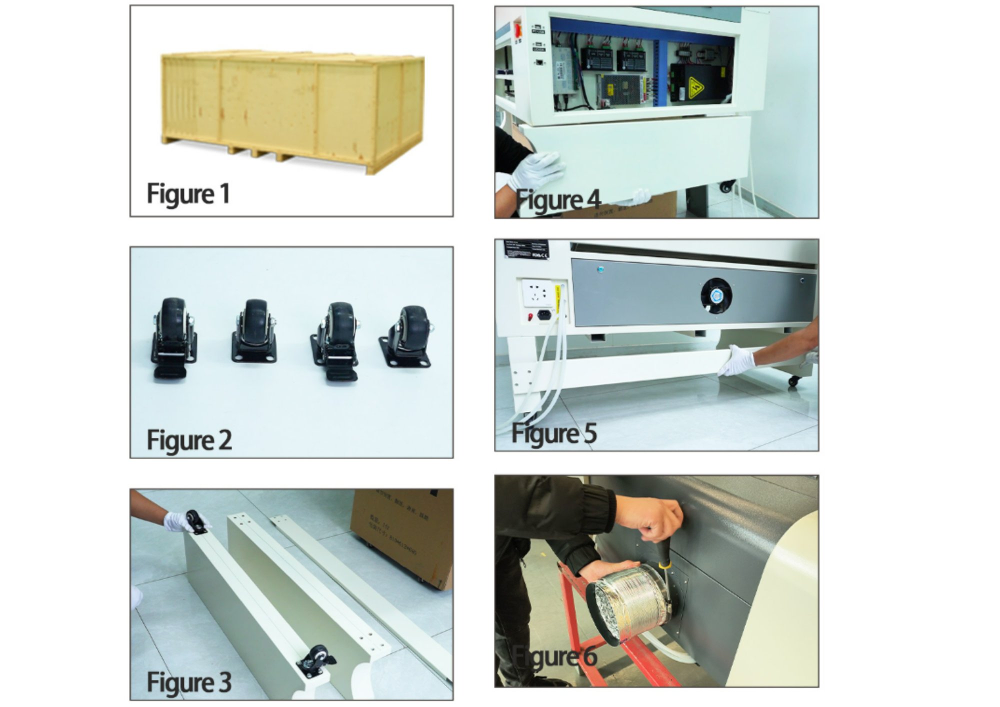
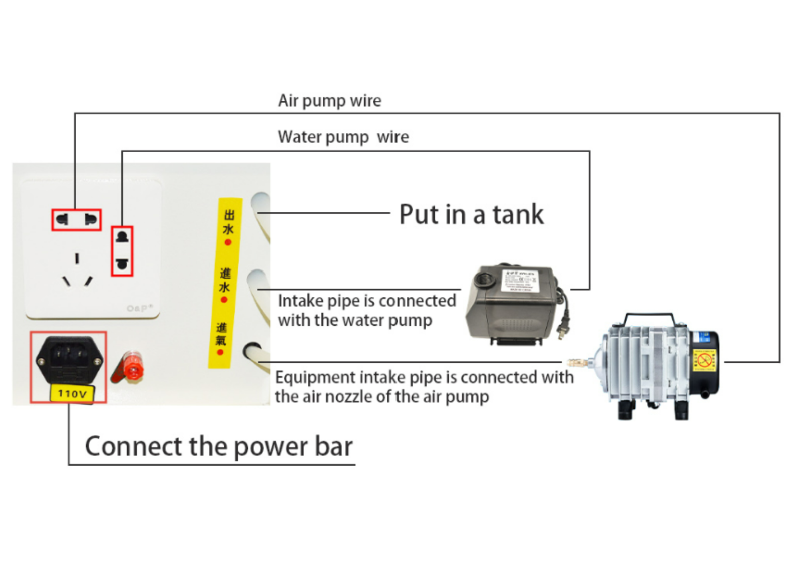
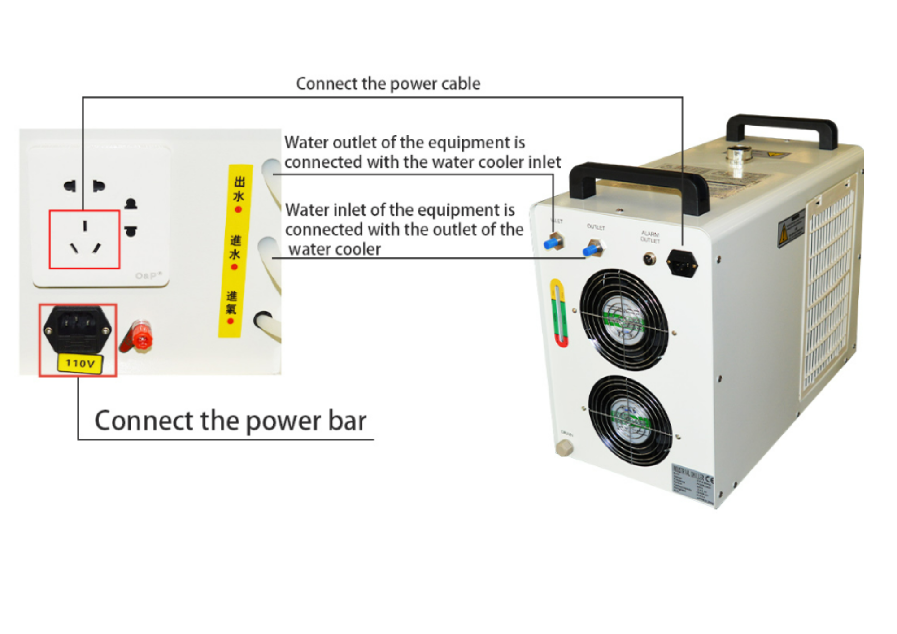
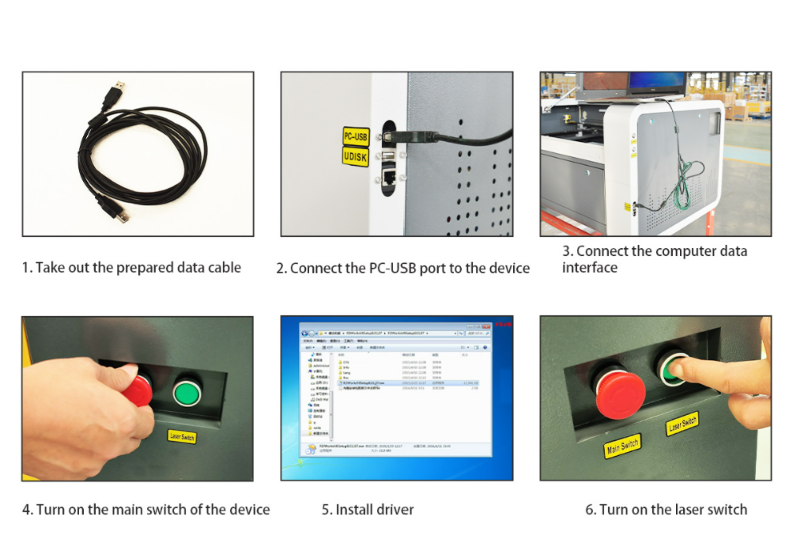
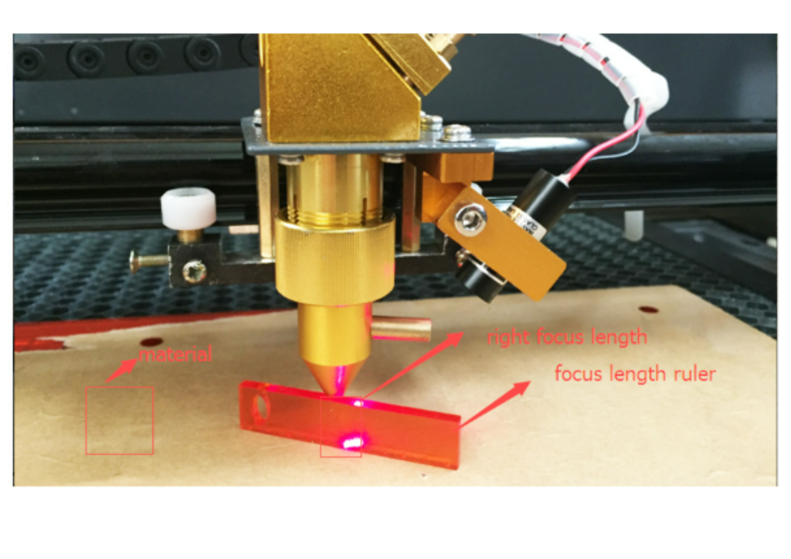
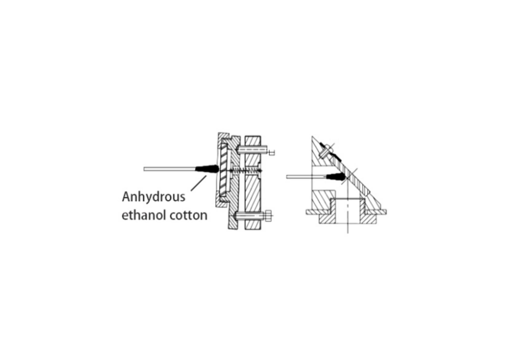

1. Instalación del equipo
La instalación inicial comprende el desembalaje, la colocación de las ruedas, los soportes inferiores y el conducto de extracción de humo.


Secuencia de instalación del producto traducida al español.
Procedimiento
Abra el embalaje del producto.
Compruebe los accesorios incluidos y retire las ruedas universales.
Instale las ruedas universales. Retire el soporte del producto, coloque la rueda universal en la parte inferior del soporte y apriete los tornillos.
Instale el soporte de las ruedas universales en la parte inferior del equipo.
Instale las vigas de soporte.
Instale el conducto de extracción de humo.
Advertencia
Todas las operaciones de instalación deben realizarse con la alimentación eléctrica desconectada.
2. Conexiones
Conexión de la bomba de aire y de la bomba de agua


Conexión general de las bombas auxiliares.
El documento indica conectar los cables de alimentación de la bomba de aire y de la bomba de agua a la barra de alimentación correspondiente. La bomba de agua debe situarse en su depósito y las mangueras deben quedar firmemente conectadas.
La tubería de entrada del equipo debe conectarse a la boquilla de salida de la bomba de aire.
Conexión del chiller


Esquema traducido de conexión del sistema de refrigeración.
La salida de agua del equipo debe conectarse a la entrada de agua del chiller. La entrada de agua del equipo debe conectarse a la salida de agua del chiller.
Prudencia
Antes de conectar el chiller, el documento fuente indica que debe llenarse con agua. Para ambientes de baja temperatura menciona el uso de un anticongelante adecuado.
Conexión a una computadora


Secuencia de conexión del computador.
Tome el cable de datos preparado.
Conecte el puerto
PC-USBal equipo.Conecte el cable de datos a la interfaz de datos del equipo.
Encienda el interruptor principal.
Instale el controlador o driver.
Encienda el interruptor del láser.
Una vez completada la conexión, puede comprobarse el funcionamiento normal del equipo.
3. Ajuste del enfoque


Referencias para el ajuste de la distancia focal.
El espejo o conjunto de enfoque está instalado en el barril de enfoque. Después de aflojar el tornillo de bloqueo del bloque de sujeción del cabezal láser tipo lápiz, el barril de enfoque puede desplazarse hacia arriba o hacia abajo.
Según el documento fuente, el plano focal se encuentra aproximadamente a 7 mm del borde inferior del barril de enfoque. La máquina incluye un bloque de enfoque de aproximadamente 7 mm de espesor para determinar el plano focal.
Procedimiento de enfoque
Coloque sobre la mesa el material que se va a procesar.
Coloque el bloque de enfoque sobre la superficie del material.
Afloje el tornillo de bloqueo del bloque de sujeción del cabezal láser.
Desplace el barril de enfoque hacia arriba o hacia abajo hasta que su superficie inferior haga contacto con el bloque de enfoque.
Compruebe que la superficie del material queda situada en el plano focal.
Ajuste la altura si fuera necesario y apriete nuevamente el tornillo de bloqueo.
Mantenimiento del equipo
El documento describe el equipo como un sistema que integra elementos ópticos, mecánicos y eléctricos. Para garantizar un uso seguro y un funcionamiento normal, no debe abrirse la cubierta posterior ni modificarse la estructura interna o el motor sin autorización.
Mantenimiento general
Elimine el polvo de la guía antes de cada uso. El documento recomienda añadir aceite lubricante aproximadamente una vez cada tres meses y evitar que el aceite gotee.
Limpie oportunamente el agua, aceite y residuos presentes en la plataforma de trabajo.
Revise mensualmente las guías, accesorios y tornillos de fijación. Apriete los elementos que se encuentren flojos.
El sistema de extracción acumula polvo con facilidad; se recomienda limpiarlo como mínimo una vez por semana.
Agua de refrigeración
El documento fuente recomienda mantener el agua limpia y libre de impurezas. Indica los siguientes intervalos de sustitución:
verano: una vez por semana;
primavera y otoño: aproximadamente cada quince días;
invierno: una vez por mes.
También advierte que las incrustaciones producidas por agua dura pueden obstruir las tuberías y afectar el funcionamiento del láser.
Advertencia
El texto fuente describe un procedimiento de desincrustación con ácido. Debido al riesgo químico y a la posibilidad de dañar el tubo, las tuberías o los sellos, cualquier procedimiento químico debe ser definido y ejecutado únicamente por personal técnico autorizado y de acuerdo con la documentación específica del fabricante del tubo y del chiller.
Mantenimiento de la lente


Indicaciones traducidas para el mantenimiento de la lente.
La lente de enfoque y los reflectores son elementos ópticos sensibles. La acumulación de polvo puede dañar el recubrimiento y disminuir la calidad del grabado.
El documento señala:
limpiar la lente con etanol anhidro;
manipularla con cuidado porque es frágil;
montar la lente cóncavo-convexa en la orientación indicada;
sustituirla si el recubrimiento presenta daños.
Tubo láser
El tubo láser es un consumible. Con el tiempo, el gas interno se consume y la potencia disminuye. El documento indica que, si con la misma corriente el grabado pierde profundidad, puede aumentarse moderadamente la corriente de salida. Si incluso con el valor máximo permitido no se alcanza la potencia necesaria, debe considerarse la sustitución del tubo láser.
4. Solución de problemas
Tabla de fallas comunes
N.º |
Falla |
Método de solución |
|---|---|---|
1 |
Autocomprobación anormal al encender |
Revise la placa principal, el cable de señal, el trazador y la placa de control de iluminación. |
2 |
Profundidad de grabado irregular |
Apague el equipo, espere aproximadamente una hora y restablezca la circulación de agua antes de continuar. |
3 |
No hay tensión al arrancar |
Sustituya el fusible. |
4 |
Grabado demasiado superficial |
Ajuste la trayectoria óptica y limpie la lente. |
5 |
Letras grabadas borrosas |
Alinee la lente y ajuste la distancia focal especificada. |
6 |
Descargas o ignición |
Revise las conexiones, elimine el polvo y asegure ventilación y secado. |
7 |
Desplazamiento o detención durante el grabado |
Compruebe la puesta a tierra y sustituya el cable de datos o revise el computador. |
8 |
La máquina no trabaja después de enviar los datos |
Compruebe el cable de alimentación y el cable de datos. |
9 |
El láser no emite |
Compruebe el interruptor de alta tensión, el ajuste de corriente, la circulación del agua, la bomba, las tuberías y el estado del tubo láser. |
10 |
Líneas redundantes durante el procesamiento |
Compruebe el cable de datos y la conexión de tierra entre la máquina y el computador. |
11 |
Líneas dentadas durante el corte |
Reduzca la velocidad de corte. |
12 |
Gráfico de salida incompleto |
Compruebe que el diseño esté dentro del área de composición o trabajo del software. |